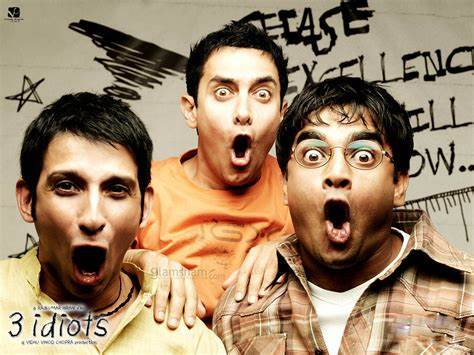

Favorite Music
A R Rahman
My favorite musician is A R Rahman. He is a oscar and grammy award winning indian music director and I love all his music.
You can check more information on him in his personal website A.R.Rahman

3 IDIOTS
My favorite movie is 3 IDIOTS. This movie is about three friends who first meet when they attend the same engineering college.
It is about
their life and teaches many life lessons with high emotion.
You can visit this IMDB link to read more about the movie 3 IDIOTS

A R Rahman
My favorite musician is A R Rahman. He is a oscar and grammy award winning indian music director and I love all his music.
You can check more information on him in his personal website A.R.Rahman
| Title | Author |
|---|---|
| The book of Joy | His Holiness the 14th Dalai lama, Arch Bishop Tutu |
| The noodle maker of Kalimpong | Anne F Thurson, Gyalo Thondup |
| Automate the boring stuff with Python | AI Sweigart |
| Half Girlfriend | Chetan Bhagat |